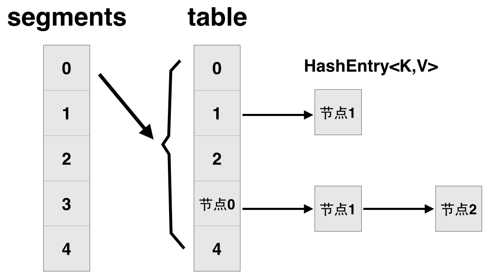

ConcurrentHashmap
JDK1.7
ConcurrentHashMap 的锁分段技术：假如容器里有多把锁，每一把锁用于锁容器其中一部分数据，那么当多线程访问容器里不同数据段的数据时，线程间就不会存在锁竞争，从而可以有效的提高并发访问效率，这就是 ConcurrentHashMap 所使用的锁分段技术。首先将数据分成一段一段的存储，然后给每一段数据配一把锁，当一个线程占用锁访问其中一个段数据的时候，其他段的数据也能被其他线程访问。
ConcurrentHashMap 不允许 Key 或者 Value 的值为 NULL，主要原因是：如果 map.get(key) 返回 null ，则无法检测 key 是否显式映射为 null 或者 key 未映射。 在非并发映射中，您可以通过 map.contains(key) 进行检查，但在并发映射中，映射可能在调用之间发生了变化。

JDK1.8
在JDK1.8中对 ConcurrentHashmap 进行了改进。取消segments字段，直接采用transient volatile HashEntry<K,V>[] table保存数据，采用table数组元素作为锁，从而实现了对每一行数据进行加锁，进一步减少并发冲突的概率。
将原先 table数组＋单向链表 的数据结构，变更为 table数组＋单向链表＋红黑树 的结构。对于 hash 表来说，最核心的能力在于将 key hash 之后能均匀的分布在数组中。如果 hash 之后散列的很均匀，那么 table 数组中的每个队列长度主要为 0 或者 1 。但实际情况并非总是如此理想，虽然 ConcurrentHashMap 类默认的加载因子为 0.75，但是在数据量过大或者运气不佳的情况下，还是会存在一些队列长度过长的情况，如果还是采用单向列表方式，那么查询某个节点的时间复杂度为
\(O(n)\)
；因此，对于个数超过 8 (默认值)的链表，jdk1.8 中采用了红黑树的结构，那么查询的时间复杂度可以降低到
\(O(logN)\)
，可以改进性能。
PUT
final V putVal(K key, V value, boolean onlyIfAbsent) {
if (key == null || value == null) throw new NullPointerException();
// 得到 hash 值
int hash = spread(key.hashCode());
// 用于记录相应链表的长度
int binCount = 0;
for (Node<K,V>[] tab = table;;) {
Node<K,V> f; int n, i, fh;
// 如果数组"空"，进行数组初始化
if (tab == null || (n = tab.length) == 0)
// 初始化数组，后面会详细介绍
tab = initTable();
// 找该 hash 值对应的数组下标，得到第一个节点 f
else if ((f = tabAt(tab, i = (n - 1) & hash)) == null) {
// 如果数组该位置为空，
// 用一次 CAS 操作将这个新值放入其中即可，这个 put 操作差不多就结束了，可以拉到最后面了
// 如果 CAS 失败，那就是有并发操作，进到下一个循环就好了
if (casTabAt(tab, i, null,
new Node<K,V>(hash, key, value, null)))
break; // no lock when adding to empty bin
}
// hash 居然可以等于 MOVED，这个需要到后面才能看明白，不过从名字上也能猜到，肯定是因为在扩容
else if ((fh = f.hash) == MOVED)
// 帮助数据迁移，这个等到看完数据迁移部分的介绍后，再理解这个就很简单了
tab = helpTransfer(tab, f);
else { // 到这里就是说，f 是该位置的头结点，而且不为空
V oldVal = null;
// 获取数组该位置的头结点的监视器锁
synchronized (f) {
if (tabAt(tab, i) == f) {
if (fh >= 0) { // 头结点的 hash 值大于 0，说明是链表
// 用于累加，记录链表的长度
binCount = 1;
// 遍历链表
for (Node<K,V> e = f;; ++binCount) {
K ek;
// 如果发现了"相等"的 key，判断是否要进行值覆盖，然后也就可以 break 了
if (e.hash == hash &&
((ek = e.key) == key ||
(ek != null && key.equals(ek)))) {
oldVal = e.val;
if (!onlyIfAbsent)
e.val = value;
break;
}
// 到了链表的最末端，将这个新值放到链表的最后面
Node<K,V> pred = e;
if ((e = e.next) == null) {
pred.next = new Node<K,V>(hash, key,
value, null);
break;
}
}
}
else if (f instanceof TreeBin) { // 红黑树
Node<K,V> p;
binCount = 2;
// 调用红黑树的插值方法插入新节点
if ((p = ((TreeBin<K,V>)f).putTreeVal(hash, key,
value)) != null) {
oldVal = p.val;
if (!onlyIfAbsent)
p.val = value;
}
}
}
}
if (binCount != 0) {
// 判断是否要将链表转换为红黑树，临界值和 HashMap 一样，也是 8
if (binCount >= TREEIFY_THRESHOLD)
// 这个方法和 HashMap 中稍微有一点点不同，那就是它不是一定会进行红黑树转换，
// 如果当前数组的长度小于 64，那么会选择进行数组扩容，而不是转换为红黑树
// 具体源码我们就不看了，扩容部分后面说
treeifyBin(tab, i);
if (oldVal != null)
return oldVal;
break;
}
}
}
addCount(1L, binCount);
return null;
}
GET
get 不进行加锁，其只需要保证可见性，所以 volatile 就可以。
- 计算 hash 值
- 根据 hash 值找到数组对应位置:
(n - 1) & h - 根据该位置处结点性质进行相应查找
- 如果该位置为 null ，那么直接返回 null 就可以了
- 如果该位置处的节点刚好就是我们需要的，返回该节点的值即可
- 如果该位置节点的 hash 值小于 0，说明正在扩容，或者是红黑树，后面我们再介绍 find 方法
- 如果以上 3 条都不满足，那就是链表，进行遍历比对即可